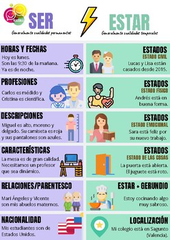

-
Leccion 1 - Verbo TO-BE
-
Usos del Presente Simple
- Verdades Generales
- Acciones Habituales / Rutinas
- Estados Permanentes
-
Verbo Tener
- I have two brothers.
Yo tengo dos hermanos. - She has a big house.
Ella tiene una casa grande. - They have class tomorrow morning.
Ellos tienen clase mañana en la mañana. - Present / Presente: Have or Has
- Past / Pasado: Had
- Past participle / Pasado participio: Had
Significado del verbo to be
El verbo to be es uno de los más camaleónicos del inglés, por lo que en muchas ocasiones su significado depende del contexto en el que te lo encuentres. Sin embargo, sus significados principales son los siguientes:
Ser
He is smart = Él es inteligente
Estar
It is cold today = Hoy está hacienda frío
Haber
Is there anybody inside? = ¿Hay alguien adentro?
Poder (permiso)
Tell her she is not to open the door to strangers = Dile que no puede abrirle la puerta a extraños.

En este aspecto nos referimos a cosas que siempre ocurren; también podríamos llamar este uso verdades científicas. › The moon rotates around the Earth. / La luna rota alrededor de la tierra. › Human beings need oxygen to live. / Los seres humanos necesitan oxígeno para vivir.
En este caso hablamos de acciones que nosotros o cualquier persona hace habitualmente. En este uso es común que se empleen los adverbios de frecuencia (visita la lección sobre Frequency Adverbs). › I usually call my parents at night. / Usualmente llamo a mis padres en la noche. › She reads a new book every week. / Ella lee un nuevo libro cada semana.
En este ítem aludimos a estados o acciones que no varían y que no son rutinas: dónde vivimos, trabajamos o estudiamos. › I live in an old house. / Vivo en una casa vieja. › My sister works for an international company. / Mi hermana trabaja para una compañía internacional.
El verbo to have se traduce a español como tener.
Este verbo se caracteriza por cambiar dependiendo del pronombre o persona gramatical con que se conjugue. Veamos:
Por ejemplo:
Al igual que todos los verbos en inglés, to have tiene tres formas o tiempo verbales en que se conjuga: presente, pasado y pasado participio. Veamos:
Verbo To Have como auxiliar:
To have también es un verbo que funciona como auxiliar para formar present perfect tense / tiempo presente perfecto y past perfect tense / tiempo pasado perfecto, conjugándolo con el verbo principal en participio.
En ese caso, to have se traduciría a español como haber.
Veamos:
Present perfect tense / Tiempo presente perfecto: